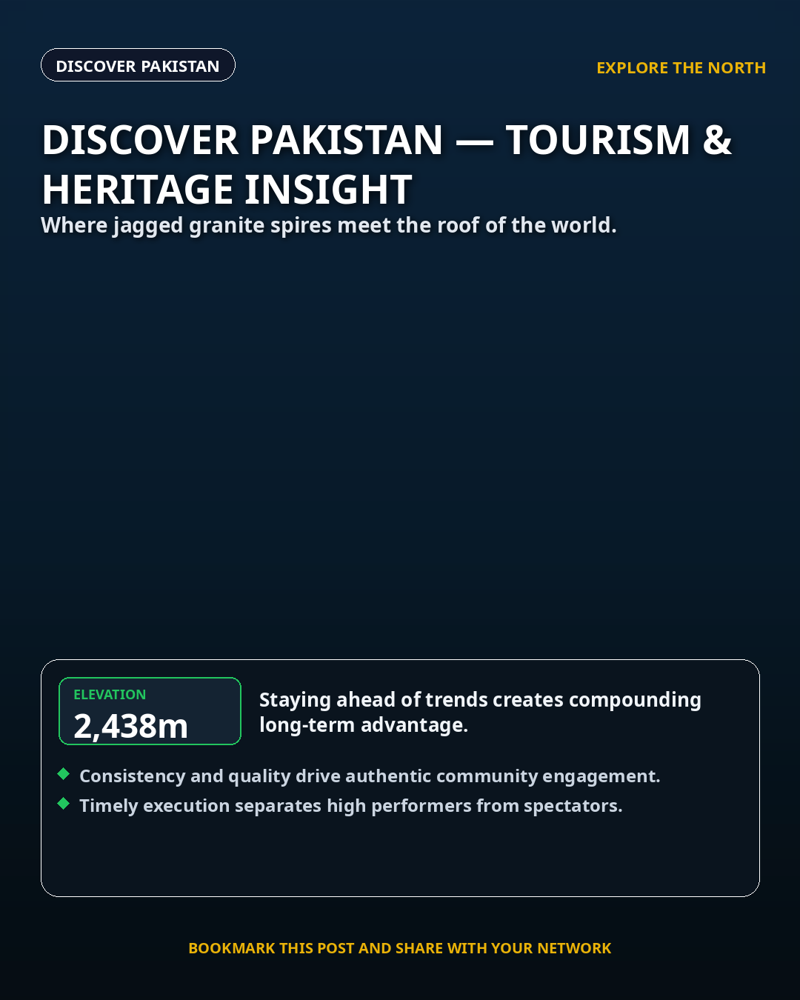
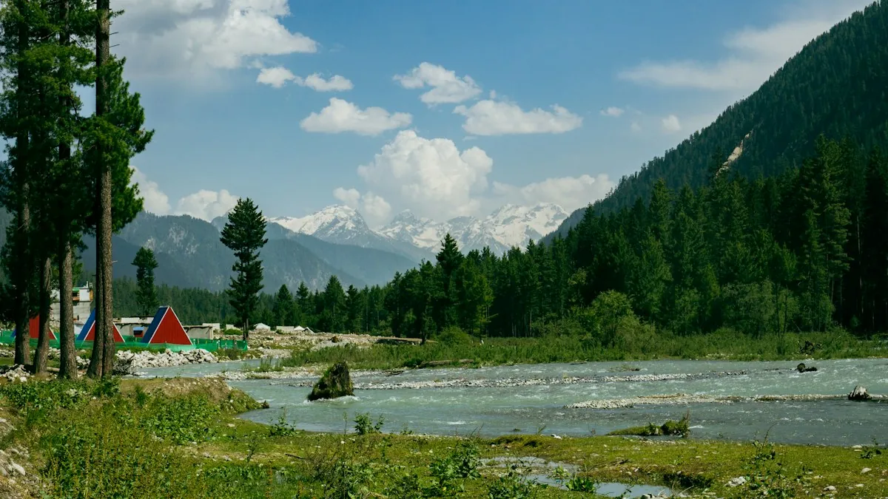
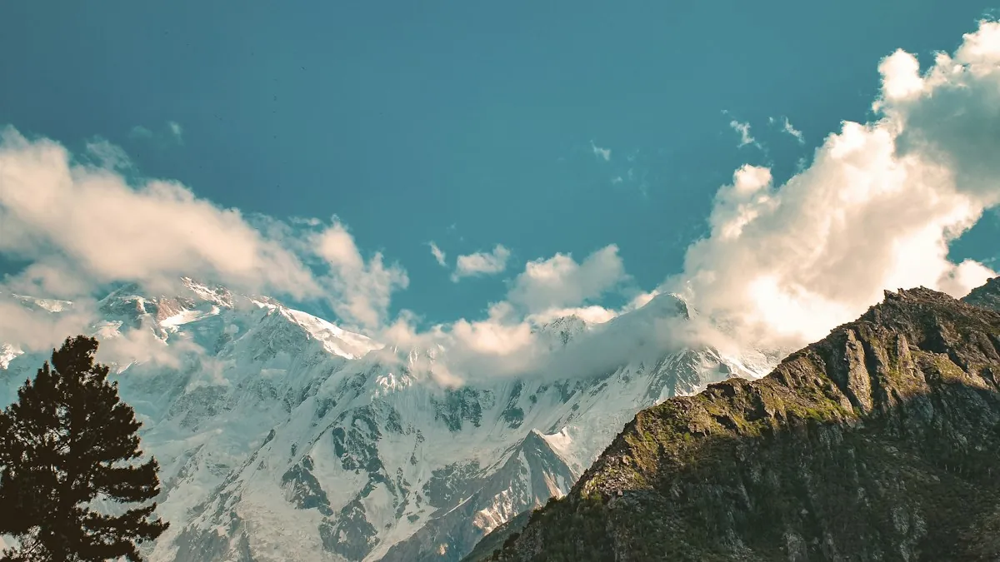

Latest
 DISCOVER PAKISTAN 🇵🇰
DISCOVER PAKISTAN 🇵🇰
Discover Pakistan — Tourism & Heritage Insight
Latest alpine journey and cultural discovery from Pakistan.

Discover Pakistan — Tourism & Heritage Insight
Latest alpine journey and cultural discovery from Pakistan.

Discover Pakistan — Tourism & Heritage Insight
Latest alpine journey and cultural discovery from Pakistan.

Discover Pakistan — Tourism & Heritage Insight
Latest alpine journey and cultural discovery from Pakistan.
 DISCOVER PAKISTAN 🇵🇰
DISCOVER PAKISTAN 🇵🇰
Discover Pakistan — Tourism & Heritage Insight
Latest alpine journey and cultural discovery from Pakistan.
 DISCOVER PAKISTAN 🇵🇰
DISCOVER PAKISTAN 🇵🇰
Discover Pakistan — Tourism & Heritage Insight
Latest alpine journey and cultural discovery from Pakistan.
 ALPINE SPOTLIGHT
ALPINE SPOTLIGHT
Hunza Valley Autumn Dossier: Golden Poplars, Rakaposhi & The Ancient Silk Route
As October chills descend on Gilgit-Baltistan, Hunza ignites in a fiery tapestry of amber poplars, apricot orchards, and 7,788m snow-clad granite spires.
 HIGH PLATEAU
HIGH PLATEAU
Deosai Plains: The Land of Giants Where Himalayan Brown Bears Roam Above the Clouds
At an average elevation of 4,114 meters, the world’s second-highest alpine plateau remains accessible for only a brief 12-week summer window.
 EXPEDITION HUB
EXPEDITION HUB
Skardu & Shangrila: The High-Altitude Oasis at the Foothills of the Eight-Thousanders
How Skardu transformed from a remote frontier outpost into the world capital of mountaineering expeditions and boutique alpine hospitality.
 GEOLOGY
GEOLOGY
Passu Cones & Attabad Lake: The Turquoise Waters Born from Mountain Collapse
The dramatic story of how a catastrophic landslide created Pakistan’s most mesmerizing emerald body of water, flanked by the jagged Passu needles.
 CULTURAL TREASURE
CULTURAL TREASURE
The Kalash Valleys: Ancient Animist Traditions in the Heart of the Hindu Kush
Deep inside the remote mountains of Chitral, an ancient civilization celebrates seasonal solstice festivals with hypnotic drums, dance, and hand-embroidered robes.
 COASTAL ODYSSEY
COASTAL ODYSSEY
Makran Coastal Highway & Hingol: The Mars-Like Formations of Balochistan
A 653-kilometer coastal masterwork connecting Karachi to Gwadar, cutting through surreal mud volcanoes, marine spires, and azure Arabian Sea breakers.

KHYBER PAKHTUNKHWA 🌲Kumrat Valley & Jahaz Banda: The Secret Alpine Meadows and Glacial Basin of Upper Dir
Hidden deep within Khyber Pakhtunkhwa, Kumrat features colossal deodar virgin forests, the rushing turquoise Panjkora river, and the secluded alpine bowl of Katora Lake at 3,500 meters.

گلگت بلتستان 🇵🇰فیری میڈوز اور نانگا پربت: قاتل پہاڑ کے سائے میں قدرت کا شاہکار اور دنیا کا سنسنی خیز ترین جیپ ٹریک
سطح سمندر سے 3,300 میٹر کی بلندی پر واقع فیری میڈوز دنیا کے نویں بلند ترین اور خطرناک ترین پہاڑ 'نانگا پربت' کے دامن میں ایک خوابیدہ وادی ہے۔